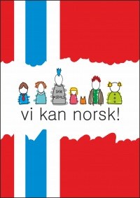

Норвежский язык принадлежит к северогерманской группе языков. Норвежский язык очень похож на шведский и датский, которые являются скандинавскими языками. Норвежцы, шведы и датчане понимают друг друга сразу, потому что говорят по-скандинавски. Старонорвежский язык появился вскоре после 1000 года, когда Норвегия приняла христианство, В это время скандинавские руны заменил латинский алфавит. В 1814 году Норвегия приняла собственную конституцию, но государственным языком был датский язык , что не устраивало норвежцев, и Х.Вергеланд и И.Осен создали новый норвежский письменный язык. Хенрик Вергеланд был поэтом и постепенно вводил в датский язык норвежские слова и выражения. Так появился язык «букмол».
Ивар Осен был более радикален. Он изучил северогерманские диалекты и создал новый язык на основе норвежского разговорного языка и местных диалектов. Этот язык называется «лансмол», или «нюнорск» (новый норвежский). Различий между «букмол» и «нюнорск» практически нет, но в «нюнорск» более сложная система склонений и спряжений и больше дифтонгов. Среди письменных языков Норвегии существует еще «самнорск» ("пан-норвежский") и «риксмол» (общий стандарт). «Самнорск» - это попытка создать единый норвежский письменный язык из «букмол» и «нюнорск», а «риксмол» - это наиболее строгая форма «букмол»- языка образованного городского населения. Как не запутаться иностранцу в этих языках? Ситуация не так страшна, как это может показаться. Все дело в том, что различия между этими языками не так велики, как кажется. В письменном виде они почти не различаются, а все отличие заключается в диалектах разговорного языка. Поэтому, слушайте, запоминайте и разговаривайте по- норвежски!